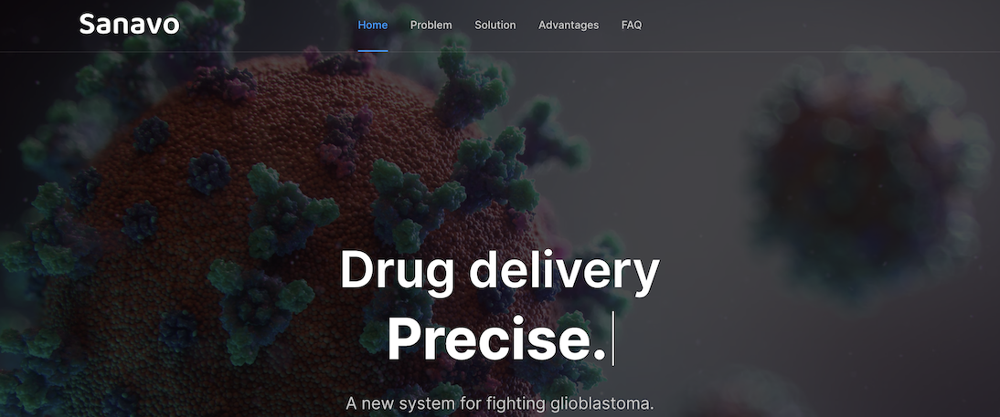
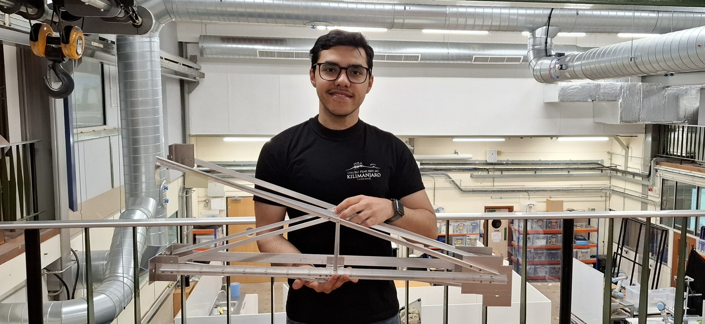
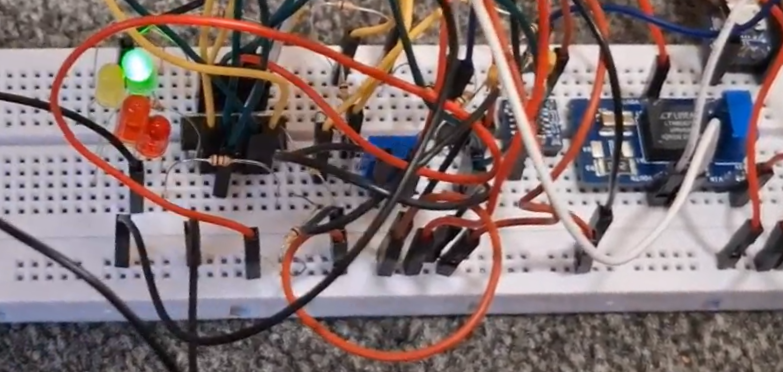

Welcome to my project portfolio, the core of the website.
As an engineer, I've built several projects over the last several years. Some of them are associated with some or the other experience, such as my IIT Internship, Cambridge coursework, TKS competitions, or more.
Others, especially recently, are completely independent, which I've built purely out of curiosity, fun, and a little resolve. This portfolio depicts all of them together, in a (hopefully) more synthesised way.
I hope to display my skills, work, and interests, and I'm always keen to hear feedback!

Calculating and animating the optimal lap for any Formula 1 Grand Prix track using a quasi-steady-state point-mass vehicle dynamics Python simulation.
Modelling an entire Boeing 777 in SolidWorks 2026 from scratch. Includes moveable landing gears, working engine wing, flaps, stabilisers, and fully rendered nose, body, tail, and even windows.
Built a fully functioning spacrecraft landing simulator, including the physics engine, graphical animation, and autopilot programme to control the spacecraft, in C++.

Designed and drew an Aluminium cantilever truss to bear and fail at specified loads. Constructed and tested the truss in the workshop and reported on the results.

Designed an analogue breadboard-based electronic circuit to measure magnetic fields, offset and amplify voltages, and display magnetic field strength in the form of a 'bar graph' of LED lights.
Digitally designed and constructed, from scratch, each part of a carriage and rollercoaster track in CAD (SolidWorks), and simulated the resulting motion.
Ideated a drug delivery & bio-sensor mechanism for glioblastoma (brain cancer) treatment. Developed as part of a team moonshot competition; commended by experts from Harvard & Johns Hopkins.
Ideated and pitched modular, sustainable, and low-cost data centres to Microsoft as part of a team consulting competition. Developed as a business case study during the very beginning of the AI era.
Ideated and pitched improved internal communication to Google teams, including AI-personalised emails (before such tools existed) and modified feedback loops, at the very beginning of the AI era.